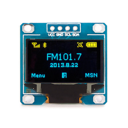
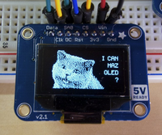

How to use OLED display with Banana Pi
Posted on July 25, 2016 in Embedded Systems • 3 min read
Today we're going to connect an OLED display on Banana Pi/Banana Pro throught I²C. These displays are very small, but very readable due to the high contrast.

In this example I will use a 128x64 OLED display based on SSD1306 controller. You can find models that use I²C or SPI as communication interface. SPI is generally faster than I2C but uses more pins.
Connecting the module
The table bellow shows how to connect a display that uses I²C interface.
| OLED Pin | BananaPi/Pro Pin |
|---|---|
| VCC | 1 (3V3) |
| GND | 6 (GND) |
| SCL (or CLK) | 5 (SCL) |
| SDA (or Data) | 3 (SDA) |
| RST | 24 (GPIO8) |
Dependencies
If you're using your display for the first time, you will need to install some dependencies. If you're using ArchLinux you can run the following commands:
sudo pacman -Syu
sudo pacman-db-upgrade
sudo trust extract-compat
sudo pacman -S python python-pip base-devel i2c-tools python-imaging lm_sensors libjpeg-turbo freetype2
If you're on Debian-based distros you can run:
sudo apt-get update
sudo apt-get install build-essential python-dev python-pip python-imaging python-smbus libfreetype6-dev
After this you can install Python PIL or Pillow. PIL is the Python Imaging Library. Pillow is a Fork of PIL and it's the better choice because it works with Python 3+.
sudo pip install Pillow
First, clone the version of RPi.GPIO from LeMaker into your home folder.
If you have a Banana Pi you need to clone bananapi branch:
git clone https://github.com/LeMaker/RPi.GPIO_BP.git -b bananapi && cd RPi.GPIO_BP
If you have a Banana Pro you need to clone bananapro branch:
git clone https://github.com/LeMaker/RPi.GPIO_BP.git -b bananapro && cd RPi.GPIO_BP
Then run sudo python setup.py install to install this library.
After, clone from Adafruit the library to use GPIO into your home folder:
git clone https://github.com/Adafruit/Adafruit_Python_GPIO.git && cd Adafruit_Python_GPIO
Before install, we need to hack the code to get it working on BananaPi. Open Adafruit_GPIO/GPIO.py with your text editor, find get_platform_gpio function and change the code to:
def get_platform_gpio(**keywords):
import RPi.GPIO
return RPiGPIOAdapter(RPi.GPIO, **keywords)
Then run sudo python setup.py install to install this library.
Finally, clone the Adafruit library into your home folder to use SSD1306-based OLED displays:
git clone https://github.com/Adafruit/Adafruit_Python_SSD1306.git && cd Adafruit_Python_SSD1306
Run sudo python setup.py install to install this library.
Code example
Copy the code below to your home folder (or elsewhere) give a name to you file like oled.py and run sudo python oled.py to see the result.
import Adafruit_SSD1306
from PIL import Image
from PIL import ImageFont
from PIL import ImageDraw
RST = 24
# 128x64 display with hardware I2C:
disp = Adafruit_SSD1306.SSD1306_128_64(rst=RST, i2c_bus=2)
# initialize library.
disp.begin()
width = disp.width
height = disp.height
# clear display.
disp.clear()
disp.display()
# create image buffer.
# use mode '1' for 1-bit color.
image = Image.new('1', (width, height))
# load default font.
font = ImageFont.load_default()
draw = ImageDraw.Draw(image)
# draw text line.
draw.text((4, 0), 'alexandrevicenzi.com', font=font, fill=255)
# draw line separator.
draw.line((0, 15, 128, 15), fill=255)
# draw another text line.
draw.text((4, 20), 'OLED Display example', font=font, fill=255)
# draw the image buffer.
disp.image(image)
disp.display()
This code will write some text and draw a line to the display as shown bellow.
{kind=link}
You can find more examples inside Adafruit_Python_SSD1306 library. But you may need to change the display initialization to match your device. A good example is how to draw an image on OLED displays.

Reference
SSD1306 OLED Displays with Raspberry Pi and BeagleBone Black